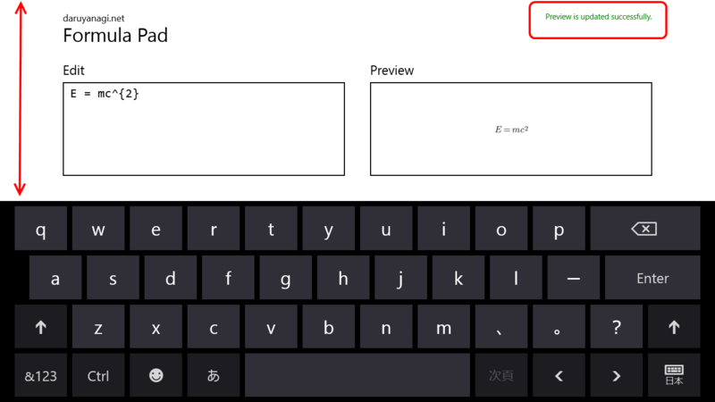

Formula Pad 1.2.0 for Windows 8
公開日：

いまだにダウンロード数が 0 なのですが、がんばって更新してみました。
1.2.0（2013/05/10）
- オンスクリーンキーボードを表示した際の使い勝手を向上（Windows Store Apps： オンスクリーンキーボードの存在を考慮したレイアウト（未解決 → 解決） - だるろぐ）
- 画面右上にステータスメッセージを表示するようにした
- エラー処理の強化
あと、解像度の高い環境*1では広告が表示されることがあります。
とはいえ、広告コントロールは張り付けてみたものの、実際に広告が掲出されたのはみたことがないので未確認なのですが。まぁ、試してみたかったのです。
*1:縦が1024pxを超える場合、Surface RT では表示されません